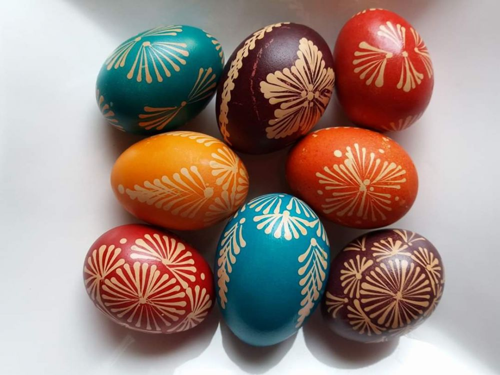
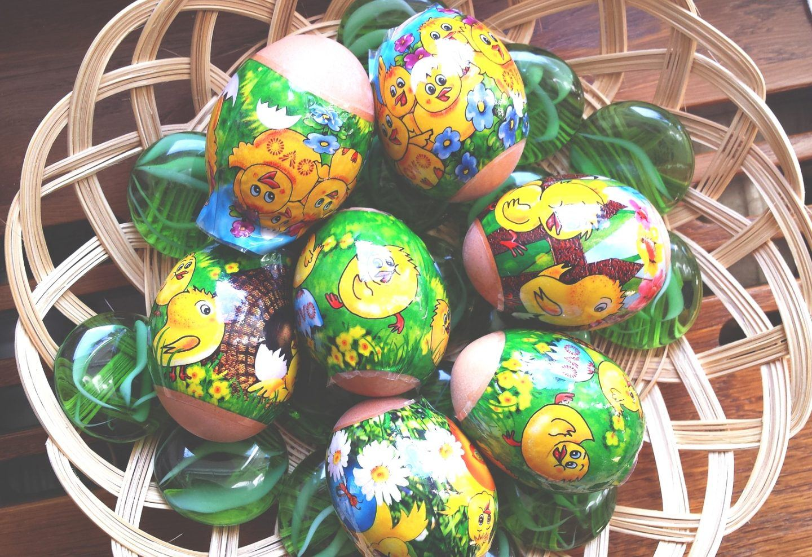

Święta Wielkanocne to jeden z najstarszych chrześcijańskich świąt. Wielkanoc obchodzona jest w wielu krajach na całym świecie, a jej obchody odbywają się zwykle w ostatni dzień lub pierwszy dzień świąt wielkanocnych. Święta Wielkanocne są obchodzone w różny sposób w zależności od kraju, w którym są one obchodzone.
Wielkanoc jest obchodzona przez wielu ludzi na całym świecie i ma wiele tradycyjnych elementów. Najbardziej popularne są jajka dekorowane na Wielkanoc, które symbolizują odrodzenie. Ludzie często robią wielkanocne pisanki, w których malują kolorowe wzory. Inne tradycje obejmują zakopywanie jajek, jedzenie potraw wielkanocnych, noszenie wielkanocnych strojów i gry wielkanocne.
 Obchody Wielkanocy są różne w zależności od kraju i regionu. W wielu krajach ludzie zbierają się na uroczyste Msze Wielkanocne, a następnie celebrują święta na uroczystym obiedzie. Inne popularne wydarzenia wielkanocne obejmują jedzenie świątecznych potraw, dzielenie się jajkami wielkanocnymi, malowanie jajek i noszenie wielkanocnych strojów.


Święta Wielkanocne to wyjątkowa okazja do świętowania z rodziną i przyjaciółmi. To również okazja do zadumy nad zmartwychwstaniem Jezusa. Święta Wielkanocne to radosny czas, w którym można celebrować i cieszyć się wszystkim, co dobre.